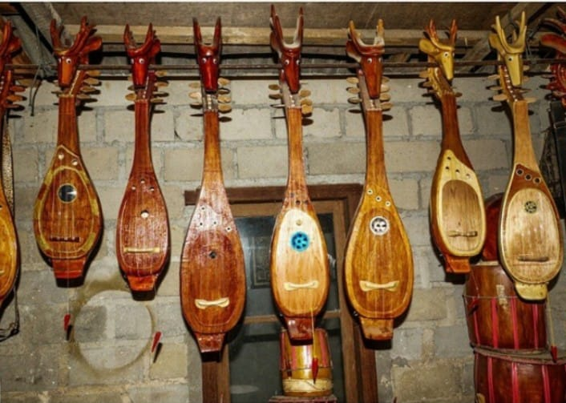

PESONA BANGKA BELITUNG
Sejarah • Budaya • Kuliner • Keindahan Alam
Mengenal lebih dekat kekayaan Kepulauan Bangka Belitung
| BERANDA | TENTANG | SEJARAH | BUDAYA | KULINER | ALAM | GALERI |
SELAMAT DATANG DI BANGKA BELITUNG

|
Tentang Website
Pesona Bangka Belitung merupakan website yang menyajikan informasi mengenai sejarah, budaya, kuliner, dan keindahan alam Kepulauan Bangka Belitung. Melalui website ini, pengunjung dapat mengenal perjalanan terbentuknya Provinsi Kepulauan Bangka Belitung, berbagai tradisi dan kesenian masyarakat, makanan khas, serta karakteristik alam wilayah kepulauan. Bangka Belitung memiliki kekayaan daerah yang dapat dilihat dari sejarah pembentukan wilayah, keberagaman budaya, kuliner khas, serta bentang alam kepulauan yang menjadi bagian dari identitas daerah. |
TENTANG BANGKA BELITUNG
|
Kepulauan Bangka Belitung merupakan salah satu provinsi di Indonesia yang terletak di bagian timur Pulau Sumatra. Provinsi ini terdiri atas beberapa wilayah kepulauan dengan karakteristik geografis, budaya, dan kehidupan masyarakat yang beragam. Bangka Belitung memiliki berbagai potensi yang dapat ditemukan dalam kehidupan masyarakatnya. Selain memiliki sumber daya alam, wilayah ini juga mempunyai tradisi, kesenian, makanan khas, serta kawasan pantai yang menjadi daya tarik daerah. Keberagaman tersebut membuat Bangka Belitung memiliki identitas daerah yang khas. Sejarah daerah, kebudayaan, kuliner, dan lingkungan alamnya menjadi bagian yang saling berkaitan dalam kehidupan masyarakat. Kehidupan masyarakat Bangka Belitung juga berkembang bersama kondisi wilayah kepulauan. Hubungan masyarakat dengan lingkungan dan sumber daya yang tersedia turut membentuk berbagai kegiatan, tradisi, serta karakter budaya yang berkembang di daerah tersebut. |
Kembali ke atas
SEJARAH BANGKA BELITUNG
Perjalanan terbentuknya Provinsi Kepulauan Bangka Belitung
|
|
Sejarah terbentuknya Provinsi Kepulauan Bangka Belitung berkaitan dengan perjalanan panjang wilayah Bangka dan Belitung dalam perkembangan pemerintahan di Indonesia. Setelah Indonesia merdeka, wilayah Bangka Belitung menjadi bagian dari wilayah Provinsi Sumatera Selatan. Keadaan tersebut kemudian mendorong munculnya keinginan masyarakat untuk membentuk wilayah provinsi sendiri. Perjuangan untuk membentuk Provinsi Kepulauan Bangka Belitung telah muncul sejak tahun 1956. Upaya tersebut dilakukan melalui berbagai perjuangan dan proses politik agar Bangka Belitung dapat memiliki pemerintahan daerah sendiri. Pembentukan provinsi dipandang sebagai bagian dari usaha untuk mengembangkan dan mengatur wilayah Bangka Belitung secara lebih mandiri. |
|
Perjalanan tersebut akhirnya menghasilkan pembentukan Provinsi Kepulauan Bangka Belitung. Berdasarkan Undang-Undang Nomor 27 Tahun 2000, Kepulauan Bangka Belitung secara resmi menjadi sebuah provinsi pada tanggal 21 November 2000. Provinsi ini menjadi provinsi ke-31 di Indonesia dengan Pangkal Pinang sebagai ibu kota provinsi. Pada awal pembentukannya, Provinsi Kepulauan Bangka Belitung terdiri atas tiga wilayah administratif, yaitu Kabupaten Bangka, Kabupaten Belitung, dan Kota Pangkal Pinang. Ketiga wilayah tersebut menjadi bagian awal dari struktur pemerintahan Provinsi Kepulauan Bangka Belitung setelah resmi berdiri sebagai provinsi. Perkembangan wilayah administratif kemudian terus berlangsung. Pada tahun 2003, terbentuk empat kabupaten baru, yaitu Kabupaten Bangka Barat, Kabupaten Bangka Tengah, Kabupaten Bangka Selatan, dan Kabupaten Belitung Timur. Pembentukan wilayah baru tersebut membuat pembagian administratif Provinsi Kepulauan Bangka Belitung berkembang menjadi enam kabupaten dan satu kota. Perkembangan tersebut menunjukkan bahwa pembentukan Provinsi Kepulauan Bangka Belitung tidak berlangsung secara tiba-tiba, tetapi melalui proses sejarah yang cukup panjang. Perjuangan sejak tahun 1956 hingga terbentuknya provinsi pada tahun 2000 menjadi bagian penting dalam perjalanan sejarah wilayah ini. Perubahan pembagian administratif pada tahun 2003 juga menjadi salah satu tahap perkembangan pemerintahan daerah Bangka Belitung. |
|
|
Pangkal Pinang sebagai ibu kota provinsi juga memiliki sejarah penamaan yang menarik. Nama Pangkal Pinang telah dikenal sejak sekitar abad ke-17. Istilah "pangkal" atau "pengkal" berkaitan dengan suatu tempat yang menjadi pusat kegiatan, seperti pusat perdagangan, pasar, tempat persinggahan, atau tempat berlabuh. Sementara itu, kata "pinang" berkaitan dengan keberadaan pohon pinang di wilayah tersebut. Nama Pangkal Pinang kemudian berkaitan dengan sebuah kawasan yang memiliki pohon pinang serta aktivitas masyarakat di sekitarnya. Wilayah tersebut juga berhubungan dengan kegiatan transportasi melalui sungai yang digunakan oleh perahu atau wangkang. Aktivitas perdagangan dan transportasi tersebut membuat kawasan Pangkal Pinang berkembang sebagai salah satu pusat kegiatan masyarakat. Sejarah nama Pangkal Pinang akhirnya menjadi bagian yang tidak terpisahkan dari perkembangan wilayah Bangka Belitung hingga menjadi ibu kota provinsi. |
|
Kembali ke atas
BUDAYA BANGKA BELITUNG
Tradisi dan kesenian menjadi bagian dari identitas masyarakat Bangka Belitung.

NGANGGUNG Nganggung merupakan tradisi masyarakat Bangka Belitung yang dilakukan dengan membawa makanan menggunakan dulang. Tradisi ini menjadi salah satu bentuk kebersamaan dan kehidupan sosial masyarakat. Kegiatan tersebut juga memperlihatkan hubungan antarmasyarakat dalam berbagai kegiatan bersama. |
 DAMBUS Dambus merupakan kesenian musik tradisional yang berkembang di Bangka Belitung. Alat musik dambus memiliki bentuk yang khas dan digunakan dalam berbagai kegiatan kebudayaan masyarakat. Kesenian ini menjadi salah satu bagian dari warisan budaya yang dikenal di daerah Bangka Belitung. |

TARI SAMBUT SEPINTU SEDULANG Tari Sambut Sepintu Sedulang merupakan salah satu kesenian tari yang berkaitan dengan budaya masyarakat Bangka Belitung. Tarian ini dapat menjadi bagian dari penyambutan dalam kegiatan tertentu. Kesenian tersebut memperlihatkan unsur budaya yang berkembang dalam kehidupan masyarakat setempat. |
Kembali ke atas
KULINER KHAS BANGKA BELITUNG

LEMPAH KUNING Lempah kuning merupakan salah satu makanan khas Bangka Belitung. Hidangan ini dikenal dengan kuah berwarna kuning dan cita rasa yang khas. Lempah kuning dapat dibuat menggunakan ikan sebagai bahan utama. Makanan ini menjadi salah satu contoh kuliner yang memanfaatkan hasil perikanan yang tersedia di wilayah kepulauan. Lempah kuning juga menjadi bagian dari kuliner yang dikenal dalam kehidupan masyarakat Bangka Belitung. |

RUSIP Rusip merupakan makanan khas Bangka yang dibuat melalui proses fermentasi ikan. Rusip menjadi salah satu makanan yang menunjukkan pemanfaatan hasil perikanan dalam kuliner masyarakat setempat. Proses pengolahan tersebut membuat rusip memiliki karakteristik rasa dan aroma yang khas. Kuliner ini menjadi salah satu bagian dari kekayaan makanan tradisional yang dapat ditemukan di Bangka. |
Kembali ke atas
KEINDAHAN ALAM BANGKA BELITUNG
|
Bangka Belitung memiliki bentang alam kepulauan dengan berbagai kawasan pantai yang menjadi salah satu daya tarik daerah. Pantai di Bangka Belitung umumnya memiliki pasir, batuan granit, dan perairan yang menjadi bagian dari karakteristik pesisirnya. Keberadaan kawasan pesisir menjadi salah satu bagian penting dari karakter wilayah Bangka Belitung. Bentang alam tersebut juga memperlihatkan kondisi wilayah yang berhubungan erat dengan lingkungan kepulauan. Keindahan alam tersebut menjadi bagian penting dari potensi daerah. Selain kawasan pantai, lingkungan kepulauan juga memperlihatkan hubungan yang erat antara masyarakat dengan sumber daya alam yang berada di sekitarnya. |
Kembali ke atas
GALERI BANGKA BELITUNG
Budaya, kuliner, dan keindahan alam Bangka Belitung
|
Pantai Bangka Belitung |
Dambus |
Lempah Kuning |
|
Nganggung |
Rusip |
Tari Sambut Sepintu Sedulang |
Kembali ke atas
|
PESONA BANGKA BELITUNG
Sejarah • Budaya • Kuliner • Alam Mengenal lebih dekat kekayaan dan identitas Kepulauan Bangka Belitung |